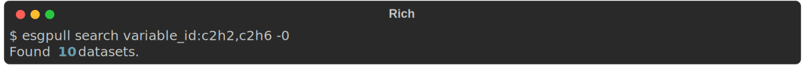
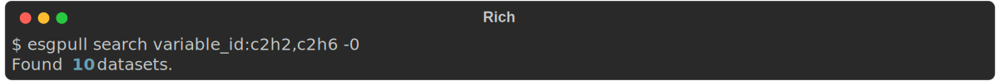

Data discovery
There are two ways to search for datasets with esgpull: facet and free-text search.
Both are done through the search command.
Facet search¶
Facet search is performed with all terms using the facet syntax <name>:<value>, for which both name and value are matched exactly.

Multiple values for a facet¶
Multiples values can be used by separating each value with a , comma.
 

Using spaces "disconnects" values from the facet name

If you don't know the facets' names
esgpull provides a handy way to print out facet names that can be used to refine a query:

Using a facet that is not in this list will always result in a query with 0 corresponding datasets.
Ignoring a facet¶
A facet can be ignored by prepending its name with !. In this case, it is not possible to specify other values for this facet.
Free-text search¶
Free-text search is performed on any term not using the <name>:<value> syntax. Each term is sent to the ESGF search API, which uses Apache Solr to match results.
Solr syntax
Solr will always try to match any of the search terms.
To make sure all the words are matched, terms must be separated with AND and written between quotes
Wildcard syntax¶
A wildcard * can be used in both facet (value only) and free-text search, allowing for more controllable search results.
Note that on most shells, the wildcard symbol should be inside " quotes, to escape it from being expanded by the shell before esgpull receives any input.
$ esgpull search "member_id:r1i*p1f1" table_id:fx variable_id:areacella experiment_id:piControl

Case sensitivity¶
For facet search, the case must match exactly, so project:cmip6 will give entirely different results than project:CMIP6.
In the case of free-text search, the opposite is true, case is entirely insensitive, and may lead to funky results.